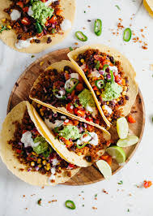

INGREDIENTS
- 2 pounds ground beef
- 1 (14.5 ounce) carton Campbell's® Mexican Style Tomato Soup
- 12 taco shells, warmed
- 3/4 cup shredded lettuce
- 1/3 cup shredded Cheddar cheese
- 3/4 cup diced tomato

INSTRUCTIONS
- Cook the beef in a 12-inch skillet over medium-high heat until the beef is well browned.
- Stir often to separate meat.
- Pour off any fat.
- Season with salt and black pepper.
- Stir the soup in the skillet and heat to a boil.
- Reduce the heat to low.
- Cook for 5 minutes or until the soup is reduced, stirring often.
- Divide the beef mixture among the taco shells.
- Top with the lettuce, tomato and cheese.